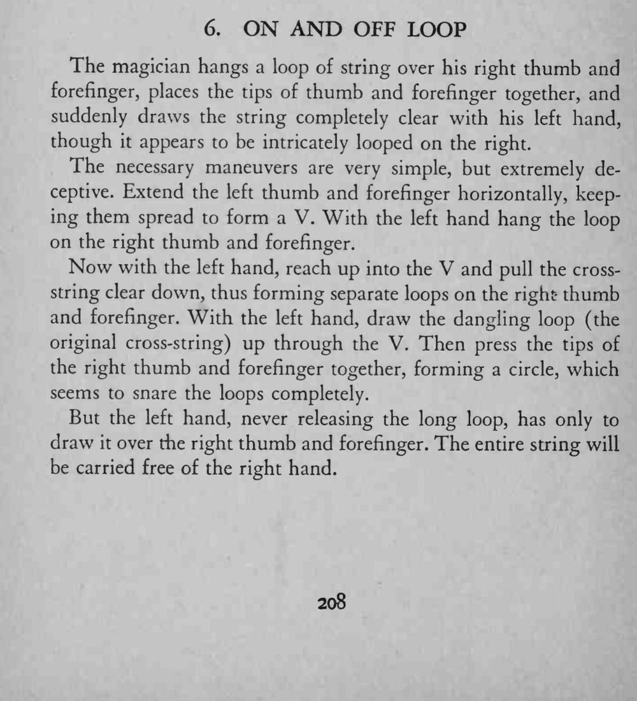
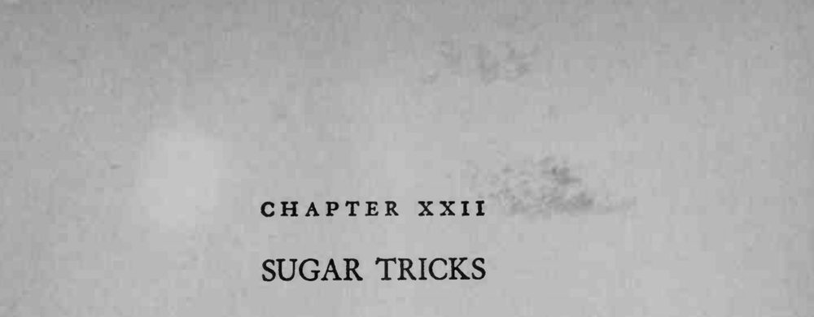

绳环挂在右手拇指与食指上，看似缠得错综复杂，左手一拉，整根绳子竟毫无阻碍地被抽走。
全程左手不能松环，右手指尖相触要自然，快慢配合才毫无破绽。


The magician hangs a loop of string over his right thumb and forefinger, places the tips of thumb and forefinger together, and suddenly draws the string completely clear with his left hand, though it appears to be intricately looped on the right. The necessary maneuvers are very simple, but extremely deceptive. Extend the left thumb and forefinger horizontally, keeping them spread to form a V. With the left hand hang the loop on the right thumb and forefinger. Now with the left hand, reach up into the V and pull the crossstring clear down, thus forming separate loops on the rightthumb and forefinger. With the left hand, draw the dangling loop (the original cross-string) up through the V. Then press the tips of the right thumb and forefinger together, forming a circle, which seems to snare the loops completely. But the left hand, never releasing the long loop, has only to draw it over the right thumb and forefinger. The entire string will be carried free of the right hand.